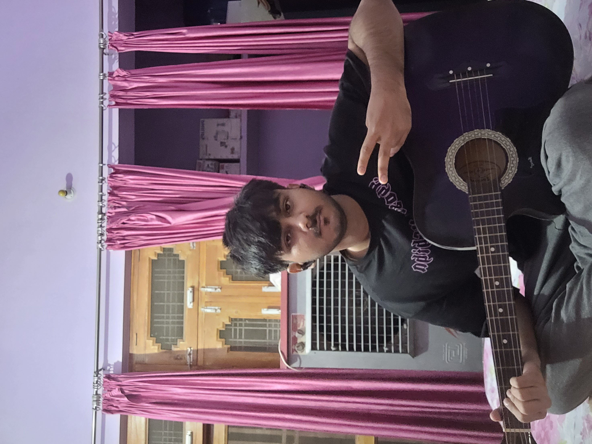

Harshal Shukla

Summary
I am Harshal Shukla. This is my resume.
Education
-
High School
- St. John's Senior Secondary School, Gola Gokarannath, Kheri, Uttar Pradesh
- Completed in 2017
- 10 CGPA
-
Intermediate
- St. John's Senior Secondary School, Gola Gokarannath, Kheri, Uttar Pradesh
- Completed in 2019
- 95.2%
-
Graduation
- Currently pursuing my B.Tech in CSE from NIT Srinagar
- 8.1 CGPA upto 4th semester
Work Experience
I have no work experience as I am still studying and working on my skills.
Skills
- Intermediate C++
- Intermediate Python
- Backend using Django
Hobbies
- Writing: I like writing freestyle poems and short stories.
- Reading: I love to read books.
- Music: I listen to a lot of Hindi music.
- Working Out: I go to the gym to keep myself in a good shape.
Contact Me